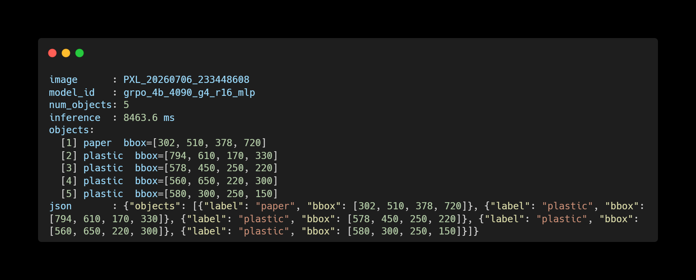

$ cat vlm-robotics/README.md
Research Assistant · University of Michigan · Jan 2026 – Present
Putting vision-language models to work on a real robot arm
Material classification and object detection for a UR5E cobot — where a model is only useful if it's fast, structured, and reliable downstream. In collaboration with UM Health.
Role
Research Assistant — VLM & robotics integration
Goal
VLM-driven material classification for robotic handling
Key outcome
64% micro-F1 across 10 categories at 4× lower latency
Context
University of Michigan · UM Health collaboration
24s → 6s
per-frame latency — measured 4B vs 30B and chose the smaller model at comparable accuracy
64%
micro-F1 across 10 material categories — Qwen3-VL 4B + LoRA (UnSloth, rank 16)
9,285
image fine-tuning dataset · structured JSONL detections for reliable parsing
$ cat problem.md
Off-the-shelf VLMs are too slow and too loose for robotics
A robot arm can't wait 24 seconds per frame, and it can't parse freeform prose. The pipeline needed detections a planner can consume — structured, low-latency, and grounded in the physical scene (object pose included).
$ ./approach.sh
01Prototyped object detection with Qwen3-VL 30B via prompt tuning on RGB frames from a UR5E-mounted Orbbec Gemini 335 depth camera, emitting structured JSONL for reliable downstream parsing.
02Fine-tuned Qwen3-VL 4B with LoRA (UnSloth, rank 16, 9,285 images) to classify materials across 10 categories → 64% micro-F1.
03Made the model choice on measurement, not size: 24s → 6s per-frame latency at comparable accuracy justified 4B over 30B.
04Recovered object pose across multi-angle captures via ArUco fiducial pose estimation from the flange-mounted camera.
05Prototyped AS7265x spectral sensing (Raspberry Pi, I2C) as a complementary material-classification signal.
$ cat results.json
- 4× latency reduction (24s → 6s per frame) with comparable accuracy — an evaluation-driven model decision
- 64% micro-F1 on 10-way material classification from a 9,285-image LoRA fine-tune
- Detections emitted as structured JSONL — robust parsing for the robotics stack
- Pose recovery + spectral sensing prototyped for multi-modal grounding

Fig 1 — the Orbbec Gemini 335 depth camera on its 3D-printed mount

Fig 2 — fine-tuned Qwen3-VL material detections (paper / plastic)

Fig 3 — the same frame as structured JSONL — what the robotics stack actually consumes
$ grep -r skills
vision-language modelsQwen3-VLLoRA / QLoRA · UnSlothprompt engineeringlatency/accuracy trade-offsUR5E cobotRGB-D sensingArUco pose estimationRaspberry Pi · I2C